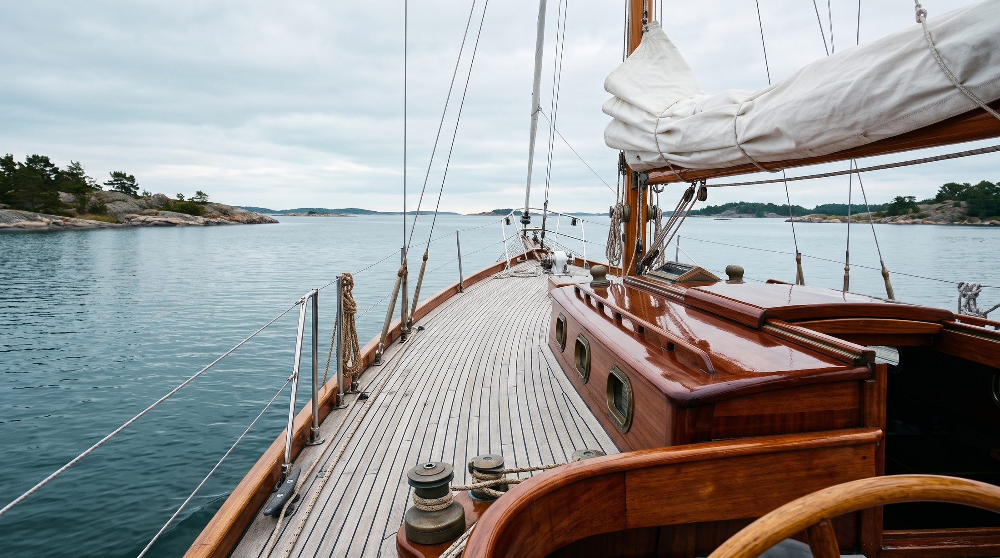
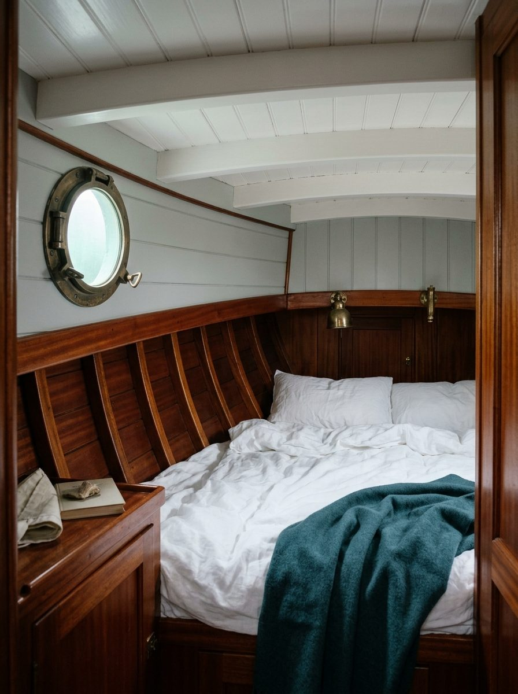
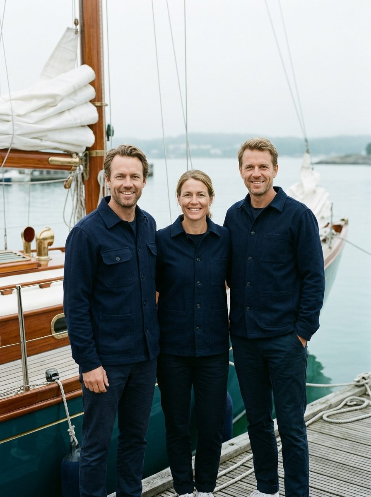

Classic yachts, kept for you

Halyard looks after classic wooden yachts the way a good captain would: discreetly, thoroughly, and one hull at a time.
We work for a small circle of owners and the guests they welcome on board, keeping each yacht sound, beautiful and sailed — for a week, a season or a lifetime — with a plan drawn up for that yacht alone.
Our own team of riggers, varnishers and skippers answers for every stage of the work, so the yacht you step onto is always the yacht you hoped for.
Your yacht,
our watch
Season care,
all year round

You own a wooden yacht and want it ready whenever you are. We take charge of the whole year: winter storage, varnish, rig, engine and launch, planned and reported by one keeper.
DiscoverCharter,
run for you

Ideal if you would like your yacht to pay for its own upkeep. We run the charter from first enquiry to final rinse: pricing, guests, skippers, linen, cleaning and maintenance between weeks.
DiscoverRefit
& second life
for hulls

We find hulls worth saving, often before they reach the market, lead the restoration with our partner shipwrights and deliver a yacht that sails, holds its value and can be chartered from day one.
DiscoverStep aboard a classic yacht, rigged, provisioned and ready to sail

Halyard, yacht keeping
in its quietest
and surest form
